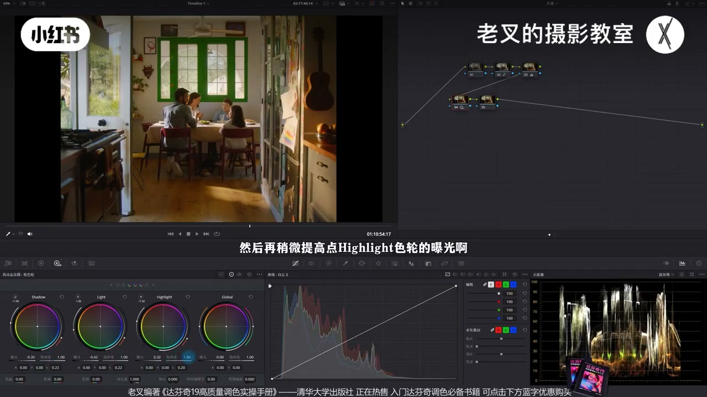
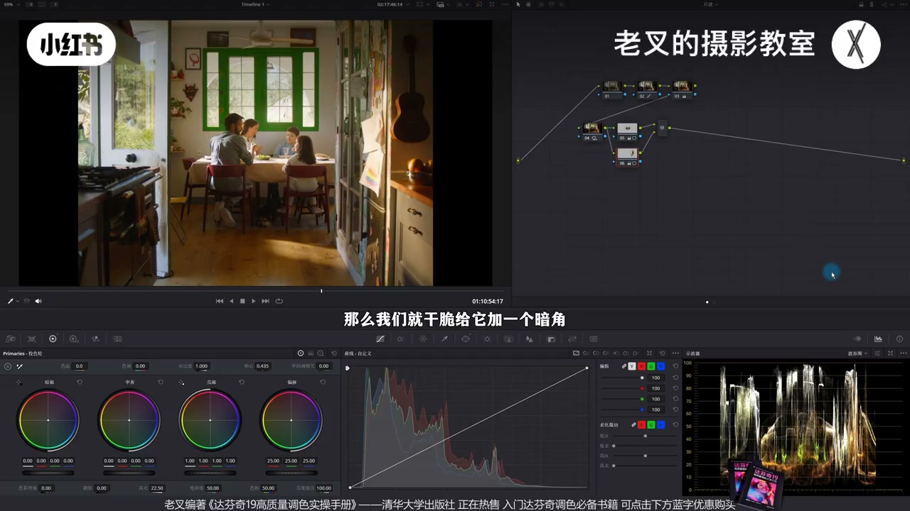
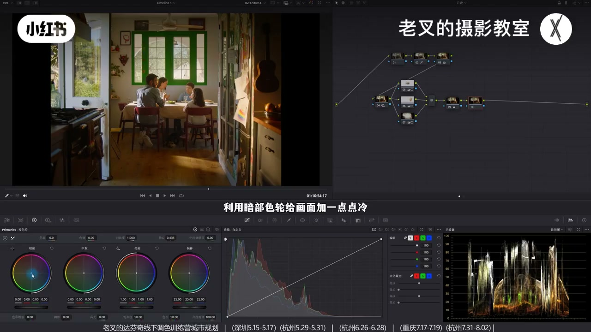
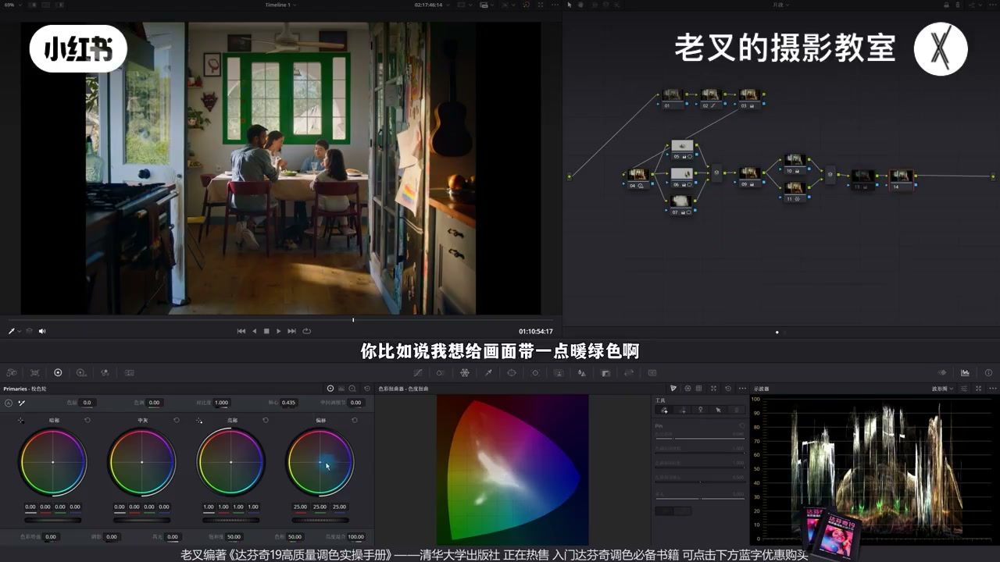
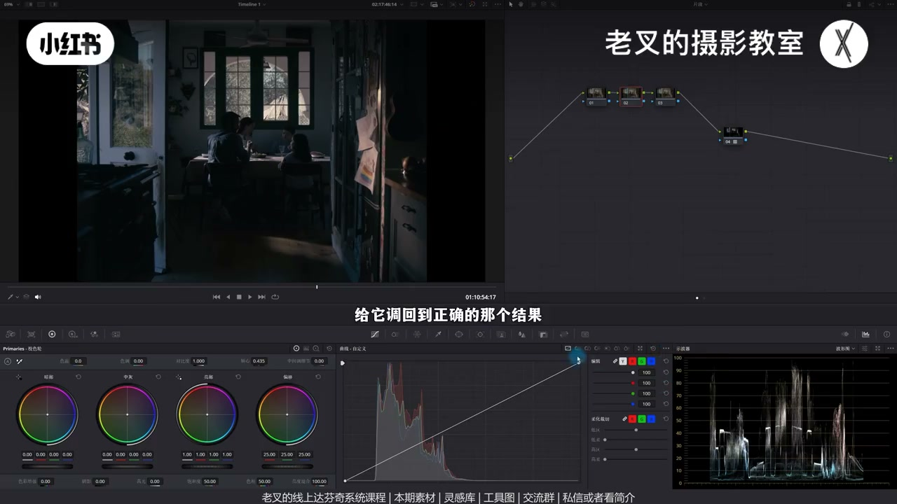

内容要点
温馨午后两条路：手搓按夕阳大光比——HDR 降 Shadow/Light、抬 Highlight 出立体；再按主体/氛围/环境分区提中间桌、抬右侧儿童画、暗角压四周；全局降高光加慵懒不等于取消分区。颜色暗部微冷+并行保暖出层次，再可全局偏暖或暖绿；柔和对比度收束。另一条套 2383 后前回调曝光饱和并同样分区，降暗部蓝青艳度。
知识结构
Shadow/Light 降、Highlight 抬：午后大光比层次。
主体桌提亮；氛围儿童画抬高光；环境暗角压四周仍略抬高光。
全局降高光加阴暗感；并行暗部冷+保暖，颜色也有层次。
样条线柔和对比度加强慵懒，两端压灰。
套 FilmLooks 2383 后前回调；同样分区；控暗部蓝青。
温馨靠影调分区+颜色层次，不是一团暖。全局降高光要建立在主次已分之后。2383 好用但不能只依赖，必须回调与分区。
00:00-01:02还原后：HDR 做出午后大光比
简单还原曝光+饱和，底子不错。塑造温馨午后，影调按夕阳：高光柔和的大光比。
第二排 HDR：降 Shadow、降 Light、抬 Highlight——人物光影更立体，画面开始有温馨感。这组组合反复好用。

01:02-02:54主体 / 氛围 / 环境三区
对照分享平台 Stage0 调色流程第二阶段：区域调整。主体是中间一桌人——遮罩略抬中灰曝光强化。
氛围是右侧受光儿童画——并行遮罩抬高光滑块小幅强化。其余当环境：大柔化圆遮罩反转做暗角，降阴影的同时略抬高光，避免四周发灰。开关对比主次分明。

02:54-04:45全局降高光加慵懒；颜色冷暖分层
再全局略降一级高光滑块加「阴暗/慵懒」。这不是取消前面提亮：只开 9 号无主次仍不慵懒；分区后再压高光才既有层次又有懒感。
颜色不能只有一种暖：暗部色轮微冷，并行节点加暖饱和并色相略偏红——暖区几乎不动，暗面有冷暖层次。再可后插加色温或走暖绿。

04:45-07:49柔和对比度；2383 套用与回调
样条线：高光下压、高光波杆上提，暗部上提、暗部波杆下压——慵懒再加强，无极亮极暗。手搓完成。
另一路径：LUT 库 FilmLooks 2383 直接拖上常过暗过反差——Shift+S 前插回调曝光与饱和，再同样做主体/氛围/环境；暗部蓝青加密度降饱和控艳，可再全局暖绿。不能只依赖 LUT。


完整转录（276段）
以下文本由 Whisper medium 模型自动转录，可能存在少量识别误差，已尽可能修正。
这种效果要怎么用大分析做出来
我们看到画面给它做一下简单的还原
能够看到画面的底子还是不错的
还原很简单
我们不用过多的去讲
其实就是把曝光给它做到位
然后再给它加一点饱和度
简单一还原之后能发现画面底子不错
那我们该如何塑造调色思路呢
我们这一期用两种方法
我们先讲手出的方式
这对于一个画面光影的走向是最为关键的部分
我们知道画面它其实想要去走午后温馨的感觉
那么影调关系自然要按照夕阳十分的影调质感去走
也就是高光柔和的大光比画面
这个我们之前讲过很多次了
建立几个节点拉到第二排
在第二排的第一个节点中
我们可以利用HDR色轮
稍微降低点Shadow色轮的曝光
再降低点Light色轮的曝光
然后再稍微提高点Highlight色轮的曝光
这个组合我们用了非常非常多次
因为它足够好用
我们看到画面整体的一个质感是不是就出来了
我们放大看人物身上的光影
是不是更加立体更有层次了对吧
而且整体的画面开始有那么一点温馨的感觉了
然后就是曝光的分区调整
我之前给大家分享一个调色流程图
就在我们这个线上分享平台的Stage0中
我们可以打开这个地方
稍微等待一下
这个图比较大是原图
刷出来了之后
这里有个白底的一张图
它就是我们之前分享过的调色简易化流程
我们可以根据这个流程去大致的梳理一下
我们调色该做的行为
我们直接来到第二个阶段
也就是曝光的优化
我们要对画面做区域性的调整
首先肯定是主体区域
我们需要大幅的强化
那这个画面中主体是谁
那自然就是中间部分这一桌的人对吧
那我们可以给它画一个遮罩
然后把它们稍微提亮一点
做到一定的主体强化的作用
我们可以给它稍微增加点中灰色轮的曝光
让它稍微亮一些
然后就是第二个区域
氛围区域
这个区域是要来辅助主体表达的区域
我们要小幅强化它
那么这个画面中
哪一个区域它是能够辅助表达情感的
是不是右侧被照到的儿童画对吧
它能够给画面带来更多的温馨的感觉
所以我们可以按主要的加P
来建立一个变形节点
给右侧这个部分
受光面也给它画一个遮罩
画完了之后
我们同样给它小幅强化
我这里选择的是提高高光划块
让它稍微亮一些
最后就是第三个区域
也就是需要弱化的环境区域
那其实这个画面中
除了被强化的两个区域以外
其他地方我们都可以视作是环境区域
那么我们就干脆给它加一个暗角
我们按主要的加P
再来一个变形节点
给整个画面画一个大如画的圆形遮罩
然后把它反转了
那这样它就选中了四周
对不对
对于这四周我们要给它稍微阴暗一些
我这里降低的是阴影划块
还是那句话
要阴暗就不能只阴暗
你还得提亮
否则你四周这些带有光感的物体
它也失去了光感
就看得很灰
所以我们需要再稍微提高一点高光划块
大概是这个结果
那这样我们就能够让画面的光影做好分区
我们可以开关下这几个节点来看一下
这是调整前
这调整后
你会发现画面的主次就做好了区分
对吧
效果还是不错的
但此时画面你会发现缺了一点点阴暗的感觉
所以我们可以再来一个节点
给画面整体降低点高光
也就是在一线交错点下方中的高光划块
给它稍微降低一点数值
大概到这个结果
你看降低高光了之后
是不是这个阴暗的感觉就有了
那肯定会有朋友有疑问
你前面两个节点给它加了亮度
现在又全局降低了高光
这不是重复行为吗
并不是
我们在9号节点降低高光的目的是给画面增加阴暗的感觉
而前面这些节点是为了区分画面的光区的
我们可以先把前面这几个节点给它关闭了
单纯的只开关9号节点
你会发现它并不能给画面带来任何慵懒的感觉
因为画面依旧是没有主次的
它整体是不够立体的
那如果说我们做了前面这几个节点的行为
再给它做全局高光下压的行为的话
那么画面中的层次也有了
慵懒的感觉也有了
所以这两个阶段的行为都是必须要做的
再然后我们就可以开始动颜色
整体画面偏暖这件事情是我们想要的
可是你的画面不能只有一种颜色
这一部分暗面
这些暗面我还是希望它能够带上一点冷色的
所以这时候我们就可以利用
并行节点的方式来给染色
先来一个节点
然后利用暗部色轮给画面加一点点冷
好大概是这个结果
我们看到暗部这些地方加上了冷色
对不对
不用太多稍微加一点就行了
但是虽然它叫暗部色轮
可它还是会全局影响的
所以我们可以按主要的加P
再建立一个并行节点
在下面这个节点中
把暖色的饱和度给它稍微强化点上来了
也就是增加一点它的饱和度
再给它色相稍微往红的方向走一点点
不用太多
好大概是这个情况
此时我们看到这两个节点的变化
是不是在保护了暖色部分
几乎没有变化的前提下
能够让画面带上冷与暖的效果
你乍一看好像没有很大的区别
可是如果我们放大看这一部分
这是调整前的颜色
画面中只有一种颜色
这是调整后的结果
你会发现画面中的颜色有层次了
整体效果其实是不错的对吧
那这时候你想要让画面再偏色
就没有任何问题了
想怎么调就怎么调
比如说你还想要让它呈现之前那种暖
我们可以在后面再加一个节点
我们可以给它稍微加一点色温
好大概到这个程度
那这时候你乍一看
好像跟之前没有区别对不对
但是如果我们把这三个节点一起开关来看一下
效果其实蛮明显的
特别是当我们放大看到这一部分暗面
这是调整前 这是调整后
是不是它的颜色
也是在有层次的基础上给它加的暖
所以这一点是非常重要的
我们不只是要利用曝光
去给画面做好层次
颜色也需要有层次
你不能像一开始那样暖成一片
然后当然如果说你想要别的颜色也可以
你比如说我想给画面带一点暖绿色
你像这种结果也是可以的
稍微黄的多一些也不错对吧
因为你的颜色有了
你想怎么调就怎么调问题都不大
最后我们可以给画面来一个柔和对比度
柔和对比度非常简单
打开曲线有三个点中可编辑的一条线
把高光这一端往下降
再把高光延伸出来的波感给它往上提
再把暗部给它往上提
把暗部延伸出来的波感给它往下降
好大概到这个程度
你会发现画面中这个拥来的感觉
又一次的被我们加强了对不对
而且画面中没有特别亮的
也不会有特别暗的
因为暗部让我们压灰了
这个效果还是挺好的
那这样我们就用手搓的方式
把画面从这样调成了这样
整体效果还挺好的对吧
素材和流程图都传到了现场分享平台
大家可以私信或者看我剪辑来加入或免费自取
还有达芬奇的线上系统课程
和线下调色训练营
那这是手搓
我们接下来可以尝试一下2383
2383是达芬奇自带的一个风格化LUT
我们可以在达芬奇界面左上角
这里有个LUT库
在LUT库中选择FilmLux
在FilmLux里面就能看到2383
那2383要怎么用呢
我们其实之前分享过
大家可以去主页搜索一下
这个LUT的使用
结论就是
直接用管他3721
我们直接给他拖到节点上
一套
你会发现画面产生了什么样的问题
太暗了
反差太强了对不对
所以这时候我们可以按住Shift加S
往前建立几个节点
在前面新建的这几个节点中
我们可以选择2号节点
把它的曝光
给它调回到正确的那个结果
高光稍微压点下来
中间给它往上一提
暗部给它稍微提点上来
好大概是这个结果
然后在3号节点
把它饱和度给它加上去
记得一定要加饱和度
那这时候你看
画面就变得正常了对不对
但依旧曝光方面
没有很好的一个层次
我们还是需要依次的强化弱化
那这一步我们就跳过了
其就这三个节点的行为
依次给主体
氛围以及环境去做强化弱化
这个我就不再重复了
最后我们可以再来一个节点
把它稍微有点腌的
暗部的蓝和青色
给它加一点密度
再给它稍微降低一点饱和度
让这个蓝色
特别是这些地方的蓝色
不要太腌
那这样就挺好的了
也可以根据你的需要
给画面染上全局的颜色
你比如说给它稍微走点暖
再带一点点绿
你看这个结果是不是也不错
72383是一个很好用的LUT
但是我们不能只依赖这个LUT
我们还需要针对这个LUT
对画面产生的影响
做到一定的回调
或者是优化
那这两个风格
一个是手凑一个是2383
调的结果都还挺好的
对吧
素材和流程图
大家别忘了领取过去之后
自己练练手
那讲到这里
如果你觉得对你有帮助的话
还希望多多三连
好了
这期就到这里
886